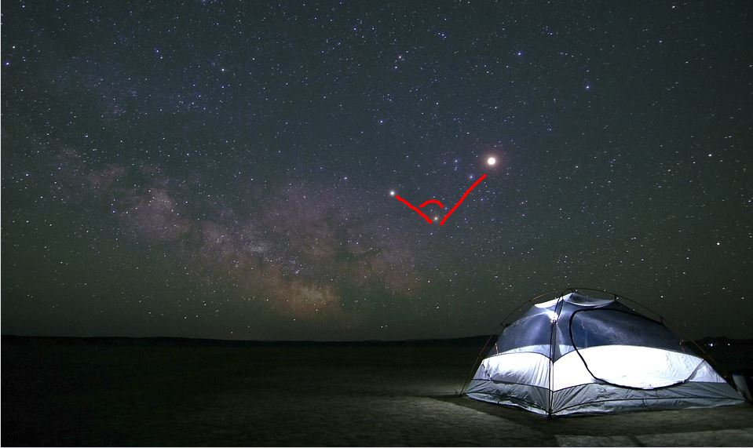
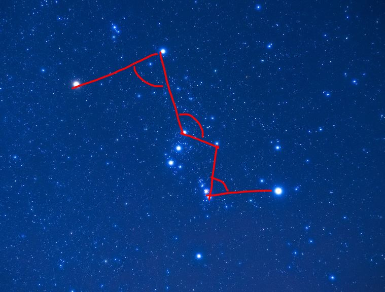

Extend Yourself - Stellarium: Travel Through Space
 Exploring Exoplanets
Exploring Exoplanets
Our Sun is not the only star with planets orbiting around it. In recent years, astronomers have discovered thousands of other planets in other solar systems. These are called exoplanets. You can use Stellarium to see how many other solar systems have been discovered so far.
 
- On the bottom menu, turn on the Exoplanets button.
- The sky will now be labeled with all known exoplanet solar systems seen from our sky.
- Take a few minutes to look around and see just how many there are!
- Estimate angles between stars the next time you look up into the night sky. See if you can use your estimates to describe the stars you are looking at to someone else. For example, "Using the 3 brightest stars, can you find an angle that looks like it is approximately 90°?"
- Print out a diagram of a well known constellation. Measure the angles within the constellation. Here is an example of some of the angles that could be measured in Orion.